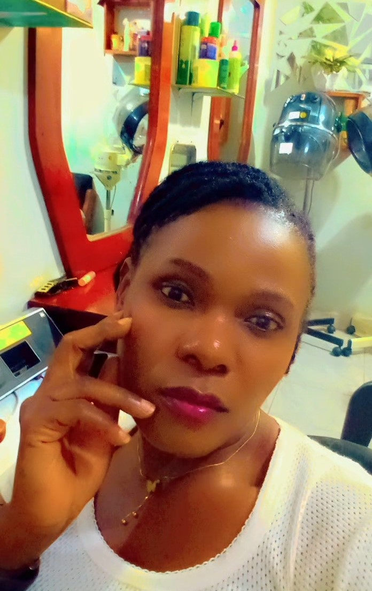

About Me
I am Sarah Nakanwagi, an aspiring software developer with a growing foundation in Python, web development, and problem-solving. I am currently studying at Ensign College, where I have completed courses in programming fundamentals, functions, and web design. I am especially interested in building efficient, user-focused applications and expanding my skills into full-stack development. In addition to coding, I use digital marketing to share my projects and connect with the developer community. I am actively looking to contribute to real-world projects, collaborate with other developers, and keep sharpening my skills through hands-on experience. I would love to connect, learn, and grow together! I enjoy Music, movies, travelling and exploring.
Kampala, Uganda
Uganda is a landlocked country located in East Africa known for its stunning natural beauty, diverse wildlife, and rich cultural heritage. It borders Kenya, South Sudan, the Democratic Republic of Congo, Rwanda, and Tanzania. The country lies along the equator and is home to the source of the Nile River, the world’s longest river. Kampala is the capital city and the country’s economic and cultural hub. Uganda is often referred to as the “Pearl of Africa,”